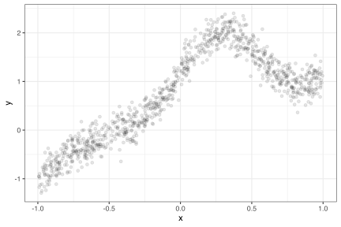
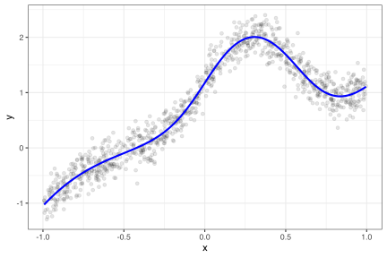

library(tidymodels)
tidymodels_prefer()
set.seed(1)
reference_data <- tibble(data = rnorm(1000))
reference_data %>%
ggplot(aes(x = data)) +
geom_line(stat = "density")
What is conformal inference? It is a collection of statistical methods that are mostly used to construct prediction intervals for any type of regression or classification model. The basic idea revolves around some theory on how to construct probability statements for a population of data points.
For example, suppose we have collected a set of 1000 standard normal data points.
library(tidymodels)
tidymodels_prefer()
set.seed(1)
reference_data <- tibble(data = rnorm(1000))
reference_data %>%
ggplot(aes(x = data)) +
geom_line(stat = "density")
If we had a new observation that we thought might be from the same distribution, how would we say (probabilistically) whether we think that it belongs to the original distribution?
If we thought that 1000 were a sufficient sample size, we might compute some quantiles of these data to define “the mainstream of the data.” Let’s use the 5th and 95th quantiles to set boundaries that define what we would expect to see most of the time:
quants <- quantile(reference_data$data, probs = c(0.05, 0.95))
reference_data %>%
ggplot(aes(x = data)) +
geom_line(stat = "density") +
geom_vline(xintercept = quants, col = "red", lty = 2)
If we were to get a new sample beyond these data, we would be able to say that we are about 90% sure that the new sample does not conform to the original distribution. This works under the assumption that the data are exchangeable.
We can apply this relatively simple idea to model predictions. Suppose we have a model created on a numeric outcome. If we make predictions on a data set we can compute the model residuals and create a sort of reference error distribution. If we compute a prediction on a new unknown sample, we could use center this reference distribution around its predicted value. For some confidence level, we now know the range of predicted values that “conform” to the reference distribution. That range can define our prediction interval.
There are a variety of ways to apply this concept (which is unsurprisingly more complex than that the above description). The probably package has implemented a few of them for regression models (classification methods are coming in the future).
Let’s make a simple example to illustrate the results. We’ll simulate a data set with a single predictor along with some unknown samples:
make_data <- function(n, std_dev = 1 / 5) {
tibble(x = runif(n, min = -1)) %>%
mutate(
y = (x^3) + 2 * exp(-6 * (x - 0.3)^2),
y = y + rnorm(n, sd = std_dev)
)
}
n <- 1000
set.seed(8383)
train_data <- make_data(n)
train_data %>%
ggplot(aes(x, y )) +
geom_point(alpha = 1 / 10)
We’ll use these data as a training set and fit a model:
set.seed(484)
nnet_wflow <-
workflow(y ~ x, mlp(hidden_units = 4) %>% set_mode("regression"))
nnet_fit <- nnet_wflow %>% fit(train_data)
nnet_pred <- augment(nnet_fit, train_data)
train_data %>%
ggplot(aes(x)) +
geom_point(aes(y = y), alpha = 1 / 10) +
geom_line(data = nnet_pred, aes(y = .pred),
linewidth = 1, col = "blue")
The most simple approach is to reserve some data specifically for estimating the residual distribution. We know that simply re-predicting the training set is a bad idea; the residuals would be smaller than they should be since the same data are used to create the model and to evaluate the model.
Let’s simulate another data set containing 250 samples and call that the “calibration set”. These data can be predicted and their residuals can be used to define what conforms to model. We’ll also create a large test set to see if we’ve done a good job.
set.seed(7292)
cal_data <- make_data(250)
test_data <- make_data(10000)The probably package has a set of functions with the prefix int_conformal that can be used to create prediction intervals. One is:
split_int <- int_conformal_infer_split(nnet_fit, cal_data)
split_int
#> Split Conformal inference
#> preprocessor: formula
#> model: mlp (engine = nnet)
#> calibration set size: 250
#>
#> Use `predict(object, new_data, level)` to compute prediction intervalsTo get predictions on new data, we use the standard predict() method on this object:
# Produce 90% prediction intervals
test_split_res <-
predict(split_int, test_data, level = 0.90) %>%
bind_cols(test_data)The results:
test_split_res %>%
ggplot(aes(x)) +
geom_point(aes(y = y), alpha = 1 / 20) +
geom_line(
data = nnet_pred, aes(y = .pred),
linewidth = 1, col = "blue"
) +
geom_ribbon(aes(ymin = .pred_lower, ymax = .pred_upper),
col = "orange", linewidth = 1, fill = NA)
coverage <- function(x) {
x %>%
mutate(in_bound = .pred_lower < y & .pred_upper > y) %>%
summarise(coverage = mean(in_bound))
}
coverage(test_split_res)
#> # A tibble: 1 × 1
#> coverage
#> <dbl>
#> 1 0.930set.seed(493)
folds <- vfold_cv(train_data)
ctrl <- control_resamples(save_pred = TRUE, extract = I)
nnet_rs <-
nnet_wflow %>%
fit_resamples(folds, control = ctrl)
collect_metrics(nnet_rs)
#> # A tibble: 2 × 6
#> .metric .estimator mean n std_err .config
#> <chr> <chr> <dbl> <int> <dbl> <chr>
#> 1 rmse standard 0.201 10 0.00524 Preprocessor1_Model1
#> 2 rsq standard 0.950 10 0.00447 Preprocessor1_Model1cv_int <- int_conformal_infer_cv(nnet_rs)
cv_int
#> Conformal inference via CV+
#> preprocessor: formula
#> model: mlp (engine = nnet)
#> number of models: 10
#> training set size: 1,000
#>
#> Use `predict(object, new_data, level)` to compute prediction intervals# Produce 90% prediction intervals
test_cv_res <-
predict(cv_int, test_data, level = 0.90) %>%
bind_cols(test_data)
test_cv_res %>%
ggplot(aes(x)) +
geom_point(aes(y = y), alpha = 1 / 20) +
geom_line(
data = nnet_pred, aes(y = .pred),
linewidth = 1, col = "blue"
) +
geom_ribbon(aes(ymin = .pred_lower, ymax = .pred_upper),
col = "orange", linewidth = 1, fill = NA)
coverage(test_cv_res)
#> # A tibble: 1 × 1
#> coverage
#> <dbl>
#> 1 0.896make_variable_data <- function(n, std_dev = 1 / 5) {
tibble(x = runif(n, min = -1)) %>%
mutate(
y = (x^3) + 2 * exp(-6 * (x - 0.3)^2),
y = y + rnorm(n, sd = std_dev * abs(x))
)
}
make_variable_data(1000) %>%
ggplot(aes(x, y)) +
geom_point(alpha = 1 / 5)
set.seed(7292)
train_variable_data <- make_variable_data(n)
cal_variable_data <- make_variable_data(250)
test_variable_data <- make_variable_data(10000)
nnet_variable_fit <- nnet_wflow %>% fit(train_variable_data)
nnet_variable_pred <- augment(nnet_variable_fit, train_variable_data)quant_int <-
int_conformal_infer_quantile(
nnet_variable_fit,
train_data = train_variable_data,
cal_data = cal_variable_data,
level = 0.90,
ntree = 2000)
quant_int
#> Split Conformal inference via Quantile Regression
#> preprocessor: formula
#> model: mlp (engine = nnet)
#> calibration set size: 250
#> confidence level: 0.9
#>
#> Use `predict(object, new_data)` to compute prediction intervals
test_quant_res <-
predict(quant_int, test_variable_data) %>%
bind_cols(test_variable_data)
coverage(test_quant_res)
#> # A tibble: 1 × 1
#> coverage
#> <dbl>
#> 1 0.910The results:
test_quant_res %>%
ggplot(aes(x)) +
geom_point(aes(y = y), alpha = 1 / 20) +
geom_line(
data = nnet_variable_pred, aes(y = .pred),
linewidth = 1, col = "blue"
) +
geom_ribbon(aes(ymin = .pred_lower, ymax = .pred_upper),
col = "orange", linewidth = 1, fill = NA)